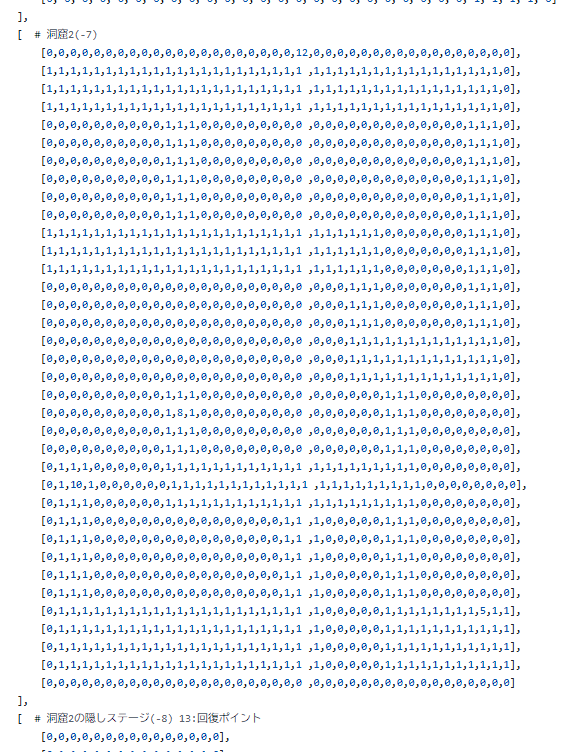

ポテトしかおらんRPG
作品紹介
高専にいたときに、夏休み中の制作物として作ったものです。
マップ移動、戦闘、職業、技、装備、武器、アイテム...といった一般的なRPGに含まれる要素を実装しました。
セーブ機能やストーリーも用意されています。

工夫点・技術的特徴
この頃はUnityをまだ使っていなかったのですべてPythonを使って書かれています。
Tkinterを使っていますが、マップ描画やカメラ移動などの描画処理を実装するのに苦労しました。

マップデータも以下のような形式で1つ1つ用意していたのでかなり労力を費やした作品です。
作品リンク
GitHubソースダウンロードページ